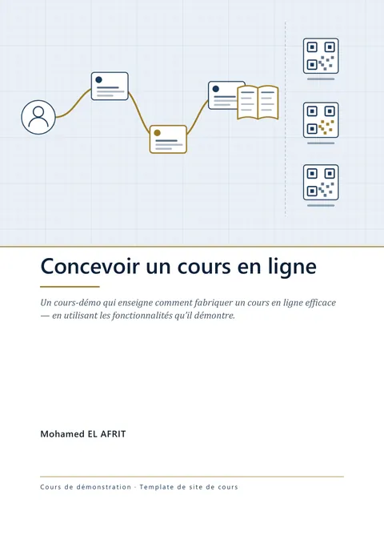
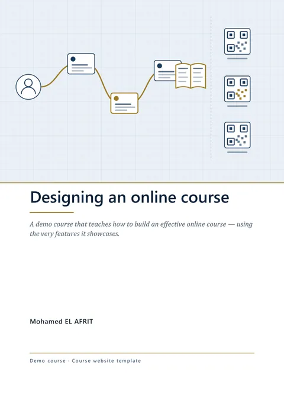

Le polycopié du coursThe course book
Tout le cours en un seul livret, à lire hors ligne, crayon en main. Le site le prolonge là où le papier s'arrête : dans la marge, des QR codes vous ramènent au bon endroit pour écouter, manipuler et vous corriger. The whole course in a single book, to read offline, pencil in hand. The website picks up where paper leaves off: in the margin, QR codes take you back to the right spot to listen, experiment, and check your answers.
Un livret tiré des pages du siteA book drawn from the site's pages
outils/generer_polycopie.py lit les chapitres du site et compose le livret Word, puis Word en exporte le PDF ; outils/publier_polycopie.py le publie ici, avec sa couverture. Ce qui est propre au cours — la présentation de l'auteur, le pied de la couverture — vit dans outils/livret.py. Les QR codes du livret de démonstration portent une adresse d'exemple : un cours en ligne y met la sienne.
outils/generer_polycopie.py reads the site's chapters and builds the Word book, then Word exports the PDF; outils/publier_polycopie.py publishes it here, with its cover. What belongs to the course — the author's introduction, the cover footer — lives in outils/livret.py. The QR codes of the demo book carry an example address: a course that is online puts its own there.
1. Le livret1. The book


Concevoir un cours en ligne
Un cours-démo qui enseigne comment fabriquer un cours en ligne efficace — en utilisant les fonctionnalités qu'il démontre.
Mohamed EL AFRIT · Cours de démonstration · Template de site de cours · Première édition
PDF · 23 pages · 0,9 Mo · en français
Designing an online course
A demo course that teaches how to build an effective online course — using the very features it showcases.
Mohamed EL AFRIT · Demo course · Course website template · First edition
PDF · 23 pages · 0.9 MB · in English
2. Ce qu'il contient2. What it contains
Le livret reprend le cours en ligne dans son ordre, avec les mêmes titres et les mêmes sections que le site : vous passez de l'un à l'autre sans rien chercher. The book follows the online course in its order, with the same titles and the same sections as the site: you move from one to the other without searching.
- Les chapitres, chacun ouvert par son mini-sommaire : le texte, les schémas expliqués élément par élément, les activités devenues exercices sur papier, « À retenir ».The chapters, each opening with its contents: the text, the diagrams explained element by element, the activities turned into paper exercises, “Key points”.
- Le glossaire : le vocabulaire du cours, avec ses équivalents anglais.The glossary: the course vocabulary, with its French equivalents.
- L'index, pour retrouver une notion : en gras, la page où la marge la définit.The index, to find a notion again: in bold, the page where the margin defines it.
3. Le livret et le site3. The book and the site
La grande marge extérieure de chaque page porte vos notes et des QR codes : visez-en un avec l'appareil photo de votre téléphone, il ouvre, au bon endroit, la ressource en ligne qui prolonge le paragraphe voisin. Dans le PDF, à l'écran, cliquez le QR code ou sa légende : ils mènent au même endroit. The wide outer margin of each page holds your notes and QR codes: point your phone’s camera at one, and it opens, at the right spot, the online resource that extends the paragraph next to it. In the PDF, on screen, click the QR code or its caption: both lead to the same place.
Aucune réponse n'est impriméeNo answers are printed
Cherchez d'abord sur papier, puis scannez le QR code de l'activité : chaque réponse y est expliquée, la bonne comme les autres.Work on paper first, then scan the activity’s QR code: every answer is explained there, the correct one and the others alike.
4. Pour l'imprimer4. Printing it
Le livret se lit aussi à l'écran : les signets du PDF mènent droit à chaque chapitre et à chaque section. Pour l'imprimer : A4, taille réelle (100 %), recto verso — les marges sont en miroir, la grande marge toujours à l'extérieur. Le noir et blanc suffit : chaque encadré se reconnaît à son pictogramme, à son libellé et à son filet. You can also read the book on screen: the PDF bookmarks lead straight to each chapter and each section. To print it: A4, actual size (100%), double-sided — the margins are mirrored, the wide margin always on the outside. Black and white is enough: each box can be recognized by its icon, its label, and its border.
5. L'auteur5. The author
Ce texte présente l'auteur du cours : son parcours, ce qu'il enseigne et ce qui l'a conduit à écrire ce cours. Dans un cours créé depuis le gabarit, l'auteur l'écrit et le valide dans outils/livret.py ; le livret l'imprime alors mot pour mot.
This text introduces the author of the course: their background, what they teach, and what led them to write this course. In a course created from the template, the author writes and approves it in outils/livret.py; the course book then prints it word for word.